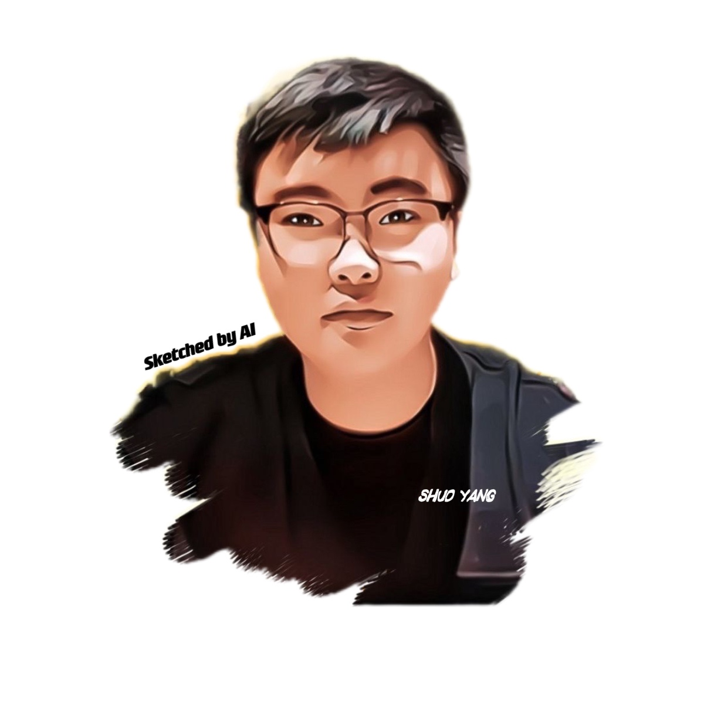

Shuo Yang 杨朔Ph.D. StudentSchool of Electrical and Data Engineering University of Technology Sydney Email: shuo.yang@student.uts.edu.au |
 |
Biography
I am currently a second year Ph.D. student in University of Technology Sydney, Australia. I obtained my bachelor degree from School of Computer Science, Harbin Institute of Technology, China in June 2020. My research mainly focus on weakly-supervised machine learning and its applicantions, especially for few-shot learning, meta-learning, label-noise learning, and dataset distillation.
Education Background
-
Ph.D. student, 2020.08 - 2024.01 (expected) University of Technology Sydney, Australia, advised by A/Prof. Min Xu
-
B.Eng., 2016.08 - 2020.06 Harbin Institute of Technology, Harbin, China, advised by Prof. Hongxun Yao
Industry Experiences
-
Baidu Research, Outstanding Intern of the Year, 2021.09 - Present
-
Bytedance AI Lab, 2021.02 - 2021.06
-
JD AI Research, Star Intern Award, 2018.12 - 2019.03
Publications
-
[CVPR 2022] CAFE: Learning to Condense Dataset by Aligning Features
Kai Wang, Bo Zhao, Zheng Zhu, Xiangyu Peng, Shuo Yang, Hakan Bilen, Guan Huang, Xinchao Wang, Yang You
IEEE/CVF Conference on Computer Vision and Pattern Recognition 2022 -
[ICLR 2022] Objects in Semantic Topology
Shuo Yang, Peize Sun, Yi Jiang, Xiaobo Xia, Ruiheng Zhang, Zehuan Yuan, Changhu Wang, Ping Luo, Min Xu
International Conference on Learning Representations 2022 -
[T-PAMI 2021] Bridging the Gap between Few-Shot Learning and Many-Shot Learning via Distribution Calibration
Shuo Yang, Songhua Wu, Tongliang Liu, Min Xu
IEEE Transactions on Pattern Analysis and Machine Intelligence 2021 -
[ICLR 2021] [Oral] Free Lunch for Few-shot Learning: Distribution Calibration
Shuo Yang, Lu Liu, Min Xu
International Conference on Learning Representations 2021
-
[CVPR 2021] Single-view 3D Object Reconstruction from Shape Priors in Memory
Shuo Yang, Min Xu, Haozhe Xie, Stuart Perry, Jiahao Xia
IEEE/CVF Conference on Computer Vision and Pattern Recognition 2021, undergraduate work -
[ACM MM 2019] Adaptive Semantic-Visual Tree for Hierarchical Embeddings
Shuo Yang, Wei Yu, Ying Zheng, Tao Mei, Hongxun Yao
ACM International Conference on Multimedia 2019, undergraduate work
Preprints
-
[ArXiv 2021][Dataset] PartImageNet: A Large, High-Quality Dataset of Parts
Ju He, Shuo Yang, Shaokang Yang, Adam Kortylewski, Xiaoding Yuan, Jie-Neng Chen, Shuai Liu, Cheng Yang, Alan Yuille
-
[ArXiv 2021] Estimating Instance-dependent Label-noise Transition Matrix using DNNs
Shuo Yang, Erkun Yang, Bo Han, Yang Liu, Min Xu, Gang Niu, Tongliang Liu
Honors and Awards
- Outstanding Intern of the Year (年度优秀实习生), Baidu Research, 2022
- International Research Scholarship, UTS, 2020 - 2024
- Star Intern Award (明星实习生), JD AI Research, 2019
- Chinese People's Scholarship (人民奖学金), 2018
- Chinese People's Scholarship (人民奖学金), 2017
- The first place of Annual Project of Harbin Institute of Technology, 2016
Academic Services
- Reviewer: ICML 2021, ICLR 2022, CVPR 2022, ICML 2022
- Program Committee Member: IJCAI 2021, IJCAI 2022
| © Shuo Yang | Last update: Oct. 2021 |